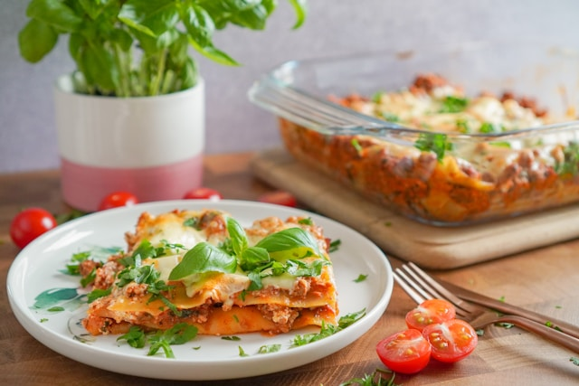

Classic Lasagna Recipe
Lasagna is a beloved Italian dish that combines layers of pasta, meat sauce, cheese, and creamy béchamel sauce. This recipe will guide you through creating a delicious, hearty lasagna that's perfect for family dinners or special occasions.
Ingredients
Meat Sauce
- - 1 lb (450g) ground beef
- - 1 lb (450g) Italian sausage, casing removed
- - 1 medium onion, finely chopped
- - 4 cloves garlic, minced
- - 1 large can (28 oz) crushed tomatoes
- - 2 cans (6 oz each) tomato paste
-
- 1 can (15 oz) tomato sauce
- - 1/2 cup water
- - 2 tablespoons sugar
- - 2 teaspoons dried basil
- - 1 teaspoon dried oregano
- - 1/2 teaspoon salt
- - 1/4 teaspoon black pepper
Cheese Mixture
- - 16 oz ricotta cheese
- - 1 large egg
- - 1/4 cup grated Parmesan cheese
- - 2 tablespoons chopped fresh parsley
- - 1/2 teaspoon salt
Lasagna Layers
- - 12 lasagna noodles
- - 16 oz mozzarella cheese, shredded
- - 1/4 cup grated Parmesan cheese
Instructions
Step 1: Prepare the Meat Sauce
- Cook the meat: In a large pot or Dutch oven, cook the ground beef, Italian sausage, and onion over medium heat until the meat is browned and the onion is translucent. Drain any excess fat.
- Add garlic:
Stir in the minced garlic and cook for about 1 minute until fragrant.
- Combine ingredients: Add the crushed tomatoes, tomato paste, tomato sauce, and water. Stir in the sugar, basil, oregano, salt, pepper, and parsley.
- Simmer:
Reduce the heat and let the sauce simmer uncovered for about 1.5 hours, stirring occasionally. This will allow the flavors to meld together beautifully.
Step 2: Prepare the Cheese Mixture
- Mix ingredients: In a medium bowl, combine the ricotta cheese, egg, Parmesan cheese, parsley, salt, and pepper. Mix until well blended.
Step 3: Cook the Noodles
- Boil noodles:Cook the lasagna noodles in a large pot of salted boiling water according to the package instructions until al dente. Drain and set aside.
Step 5: Assemble the Lasagna
- Layer ingredients: Preheat the oven to 375°F (190°C). In a 9x13 inch baking dish, spread a thin layer of meat sauce. Place a layer of lasagna noodles over the sauce. Spread a layer of the cheese mixture over the noodles, followed by a layer of meat sauce, and then a sprinkle of mozzarella cheese. If using béchamel, drizzle a little over the mozzarella.
- Repeat layers:Repeat the layers until all ingredients are used, finishing with a layer of meat sauce and a generous topping of mozzarella cheese. Sprinkle the remaining Parmesan cheese on top.
Step 6: Bake
- Cover and bake:
Cover the lasagna with aluminum foil (to prevent sticking, you can spray the foil with a little cooking spray). Bake in the preheated oven for 25 minutes.
- Uncover and finish baking:
Remove the foil and bake for an additional 25 minutes, or until the top is golden and bubbly.
-
Rest and serve:
Let the lasagna rest for about 15 minutes before cutting and serving. This allows the layers to set.
Enjoy your delicious, homemade lasagna!